Кнопки с замком открываются паролем: нажмите кнопку, введите пароль, полученный после покупки, затем «Открыть в облаке».
1 Скачайте приложение (кнопка ниже), установите его и дайте разрешения.
Если установщик ругается на «подозрительное приложение», нажмите «Всё равно продолжить».
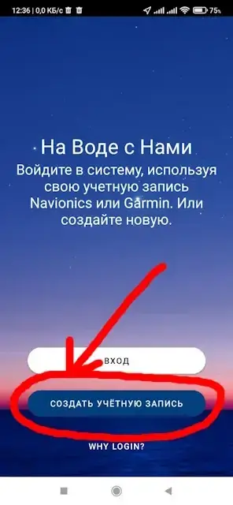
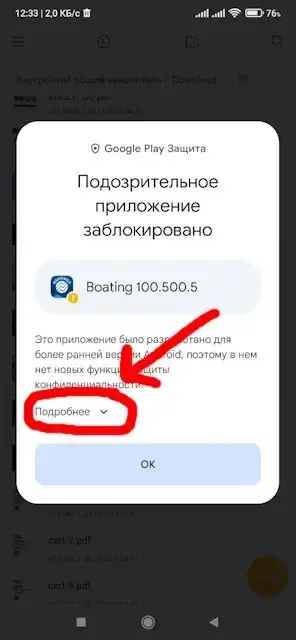
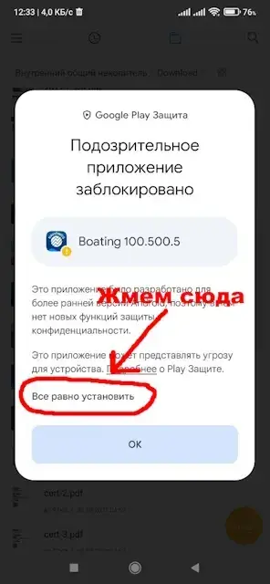
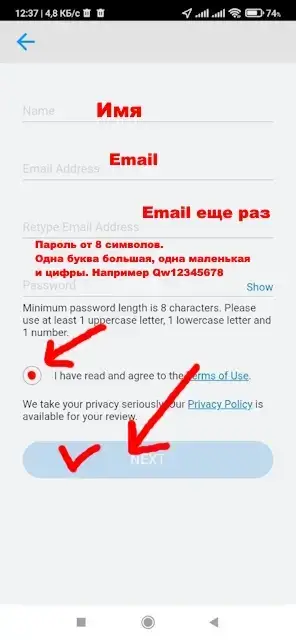
После входа вы увидите общую карту без глубин. Закройте приложение и перезагрузите телефон.
2 Для быстрой распаковки карт из архива установите файловый менеджер Total Commander: скачайте, установите и дайте разрешения.
Архивы с картами
-
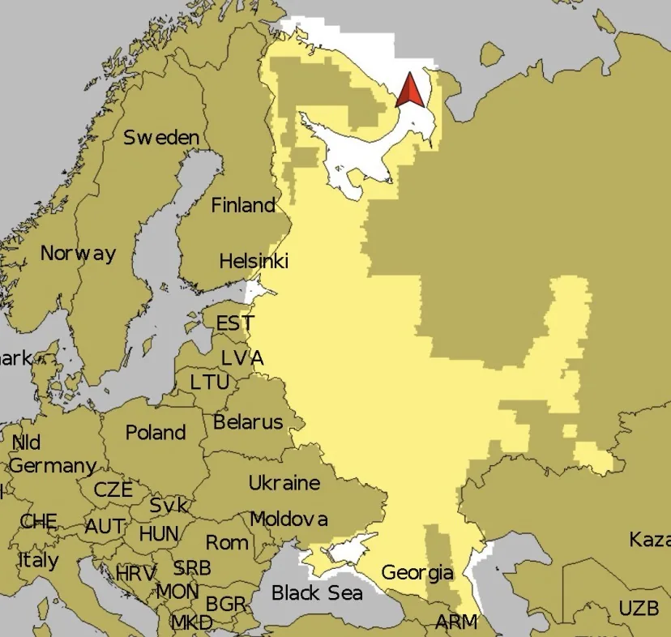
Карты России
Северо-запад от Карелии и на юг до Каспия, включая Раскаты, Азовское с Доном, Пермский край.
Скачайте общий архив с Яндекс Диска. Если из-за лимитов Яндекс Диска не получается, скачайте тот же архив с Облака Mail.
-
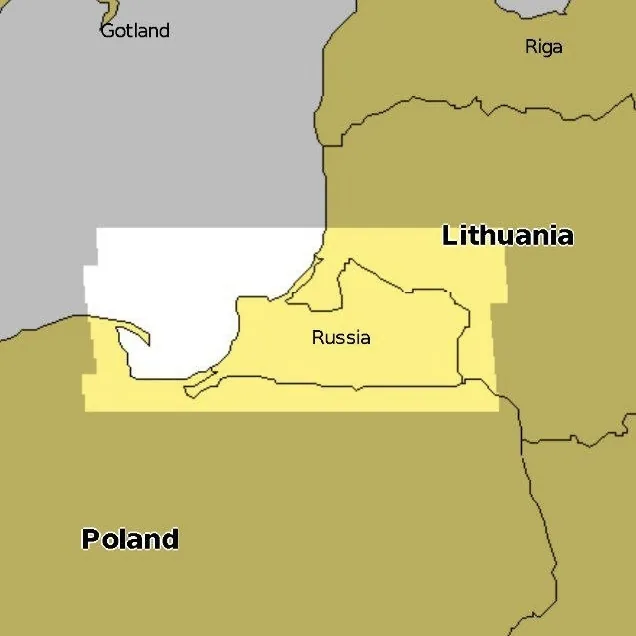
Калининград
-
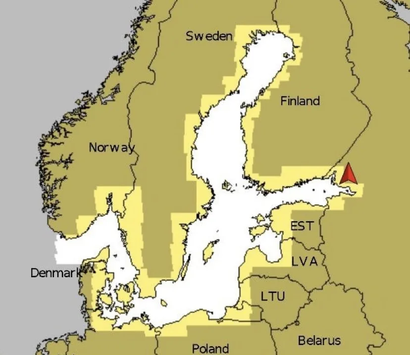
Балтийское море
-
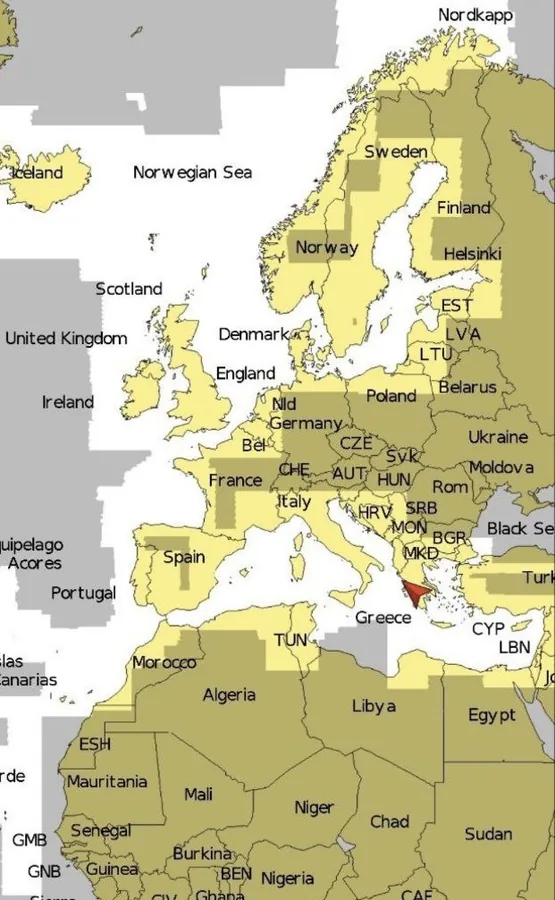
Карты Европы
-
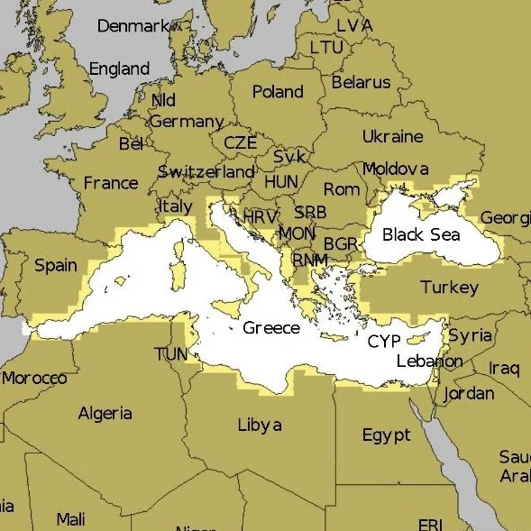
Средиземное море
-
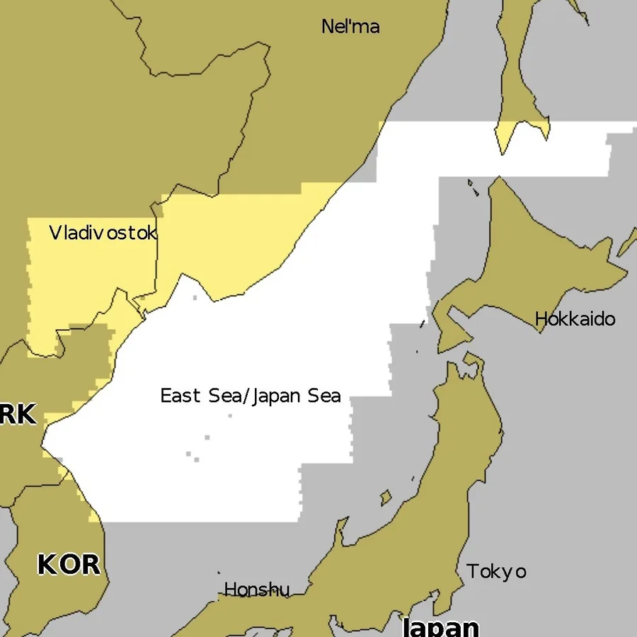
Дальний Восток, акватория Владивостока
-
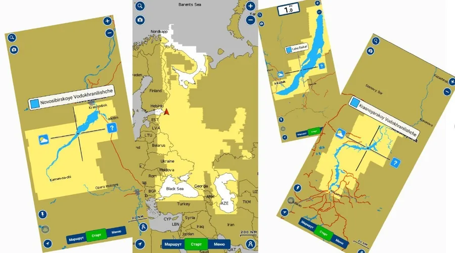
Заблокированные регионы РФ
Новосибирское водохранилище, Белое море, Байкал, Красноярское водохранилище. Эти карты работают только в версии 11.5v5 BoatingHD.
3 Карты должны быть скачаны в папку Download (Загрузки) на вашем устройстве. Обычно они сохраняются туда по умолчанию.
4 Распакуйте карты, как показано в видео.
После распаковки запустите приложение и убедитесь, что при сильном увеличении оно показывает глубины.
Запуск и первичная настройка приложения показаны во втором видео:
5 На некоторых небольших озёрах и реках глубины видны не в режиме Navionics, а только в режиме SonarChart. Зоны рыбалки в настройках карты тоже работают только в режиме SonarChart.
Чтобы раскрасить диапазоны глубин, включите Зоны рыбалки (Меню → Настройки карты → Зоны рыбалки) и добавьте нужные цветные диапазоны.
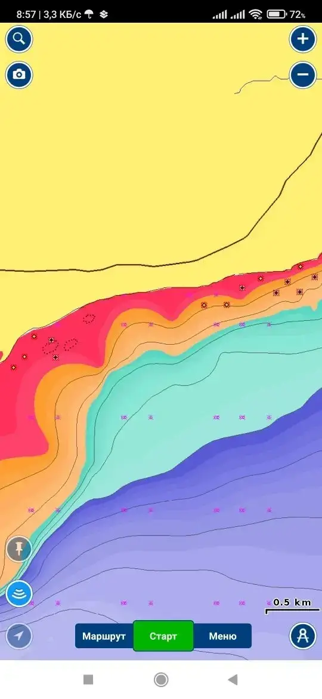
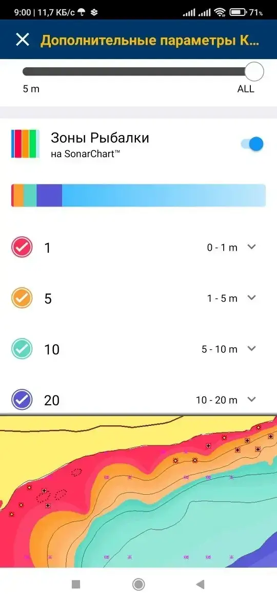
Возможные проблемы
1. Приложение не устанавливается. Возможно, дело в мобильной связи. Установите версию без регистрации:
Скачайте, установите и дайте разрешения. Если установщик ругается на «подозрительное приложение», нажмите «Всё равно продолжить». После установки запустите приложение, убедитесь, что оно показывает базовую карту без глубин, и сразу закройте его. Затем перезагрузите телефон и пройдите инструкцию с начала.
Внимание: если первый способ не сработал, перед установкой второй версии программы удалите старую версию.
2. Не показываются глубины. На некоторых небольших озёрах и реках глубины видны только в режиме SonarChart, а не в режиме Navionics (см. шаг 5).
3. Интернет. Устанавливать программу и регистрироваться желательно по Wi-Fi.
4. Ваших карт нет в архивах. Установите приложение ActiveCaptain 36.0:
- Скачайте и установите приложение.
- Войдите в учётную запись или зарегистрируйтесь.
- Нажмите на три полоски в правом верхнем углу.
- Выберите «Загрузить данные сообщества Quickdraw».
- Найдите нужный водоём и скачайте его.
Дополнительные материалы
Если что-то не получится или возникнут вопросы, пишите.
naviman88@mail.ru